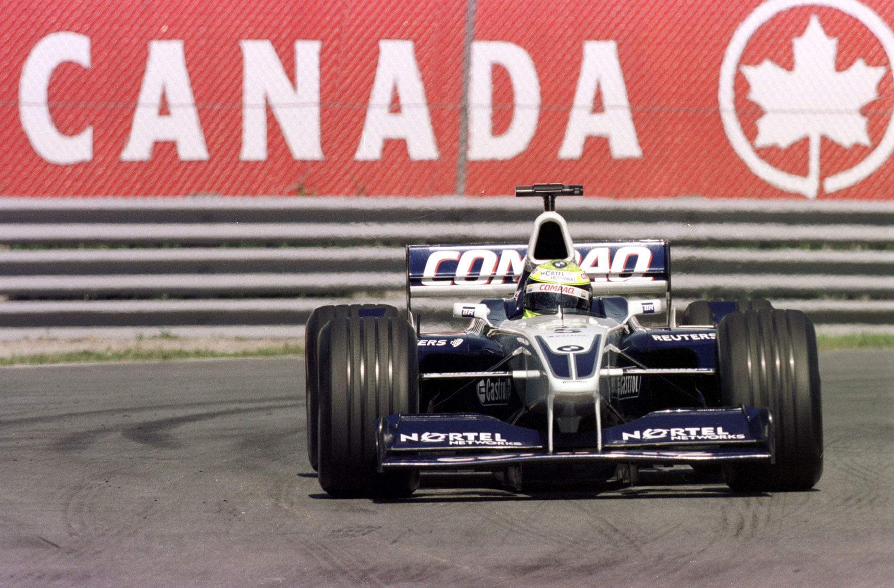
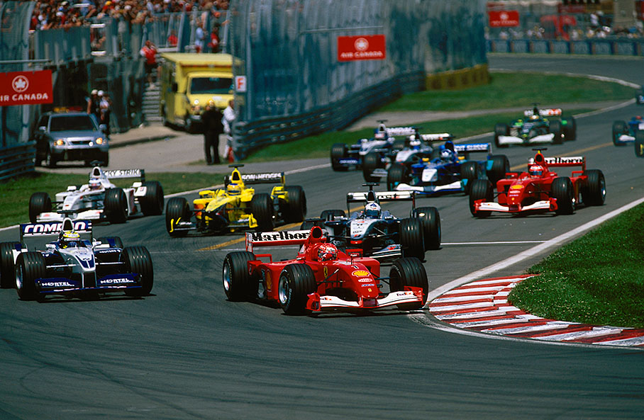
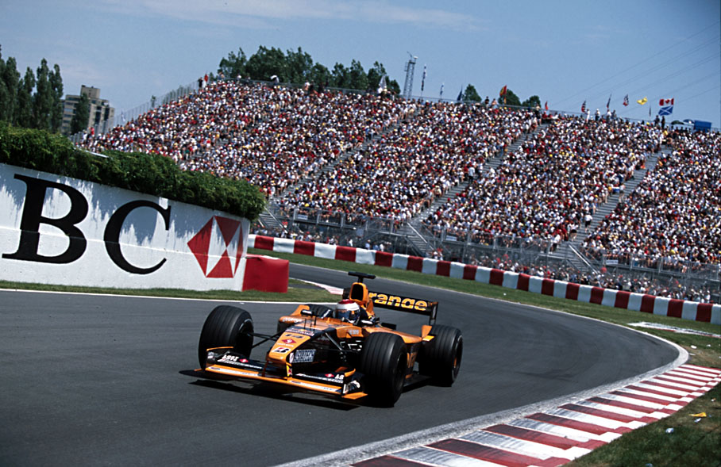
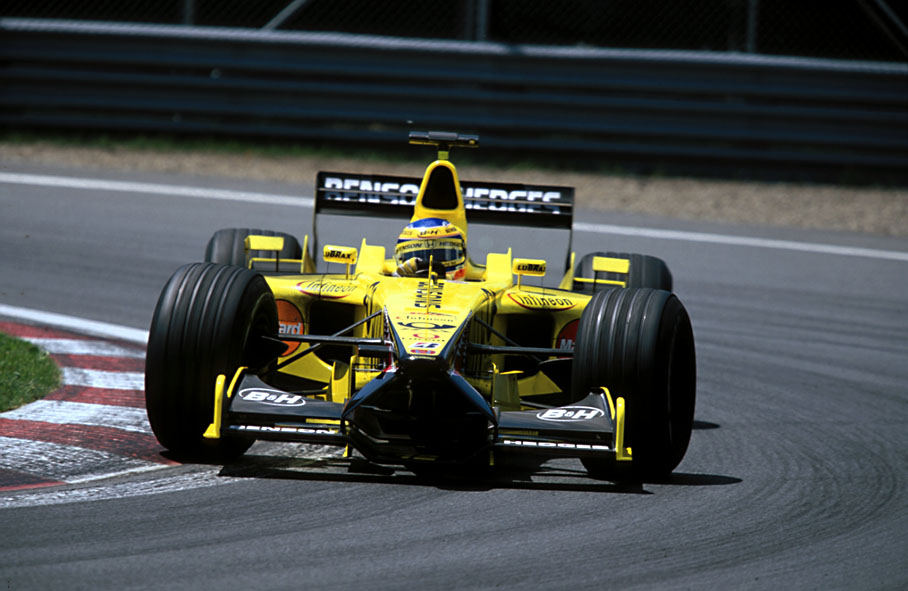
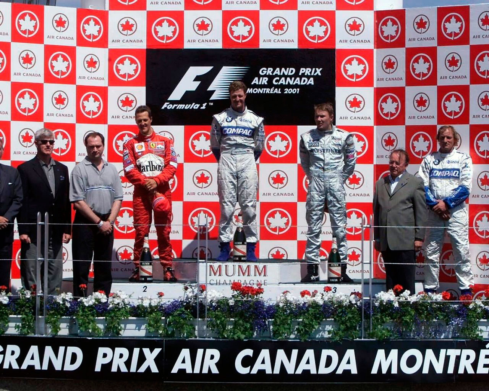

FESTA DUPLA DOS SCHUMACHER

Ralf conquistou sua segunda vitória na categoria e Michael Schumacher ampliou mais ainda a liderança no Mundial de Pilotos
POR AMÉRICO TEIXEIRA JR.
O GP do Canadá, oitava etapa do Mundial de Pilotos e Construtores de Fórmula 1, foi marcado pela festa completa dos irmãos Ralf e Michael Schumacher. O caçula do tricampeão faturou o segundo GP na temporada — e também em sua carreira — ao completar as 69 voltas no circuito Gilles Villeneuve, em Montreal, em 1h34min31s522, com média horária de 193,629 km/h. Foi dele também a melhor volta da corrida, com 1min17s205 na 50ª passagem, juntamente no instante em que liderava e acelerava ao máximo, tal como o irmão mais famoso, na busca de garantir toda a vantagem possível para o pit stop. Michael Schumacher, por seu turno, saboreou os seis pontos, uma vez que seu principal adversário ao título até o presente momento, David Coulthard, não completou a prova por causa do estouro do motor Mercedes de seu McLaren na volta 55, quando ocupava um discreto 4º posto e a 47s do líder Ralf.

O domínio dos irmãos da Alemanha começou já na classificação do sábado, com a Ferrari alinhando em 1º, tendo ao lado o Williams BMW tomando nada menos que 0s515 de Michael Schumacher. Na largada, a dupla alemã manteve-se na frente, enquanto Rubens Barrichello ultrapassava Jarno Trulli e assumia a 4ª colocação. O brasileiro da Ferrari fez uma prova de alto nível, demonstrando muito ímpeto. Na terceira volta já era o 3º ao deixar para trás Coulthard e partiu para o ataque sobre Ralf Schumacher. Sua performance era muito forte e acabou rodando na sexta volta. Caiu para 15º, iniciou recuperação e continuou andando forte — antes e depois da rodada, assinalou por diversas vezes a melhor volta. Na 20a passagem, porém, quando era o 10º e brigava com Mika Hakkinen (o 9º) e Juan Montoya (10º), acabou abandonando. O colombiano da Williams – que vem sendo criticado simplesmente porque tem peitado gente como Michael Schumacher, Eddie Irvine e principalmente Jacques Villeneuve — bateu ao entrar forte em uma curva na sua luta contra Hakkinen. Barrichello ainda teve reflexo para evitar o choque frontal, mas ao desviar perdeu o controle da Ferrari e bateu no guard-rail.

A entrada do Safety Car, que foi necessária para tirar da pista a Ferrari e o Williams BMW, foi providencial para Michael Schumacher, que já vinha sendo atacado por Ralf. Mas esse refresco foi passageiro e a situação se repetiu algumas voltas após a relargada, acontecida na volta 24. Os dois Schumacher, Coulthard, Häkkinen, Jos Verstappen (Arrows Asiatech) e Jean Alesi (Prost Acer) formavam os seis primeiros quando começaram os pit stops — todas as equipes programaram apenas um para seus pilotos. Os dois líderes foram os últimos a parar e Ralf deu uma de mestre sobre o irmão. Ele fez pressão o tempo todo, inclusive colocando o carro de lado, para evitar que Michael Schumacher voltasse a usar a sua estratégia vitoriosa de acelerar tudo nas voltas que antecedem seus pits. Dessa vez, entretanto, Ralf não desgrudou. O Schumacher mais famoso parou na volta 46 e levou 8s4 para o serviço. Aí foi a vez do irmão mais novo mostrar ter aprendido a lição do tricampeão. Pisou fundo, assinalou por duas vezes consecutivas a melhor volta e parou na volta 51. Os mecânicos da Williams devolveram-no ao combate em 8s2 depois. Resultado: retornou 6s4 à frente da Ferrari número 1 e, até o final, ampliou a vantagem para 20s200.

Um dos principais destaques da prova foi Ricardo Zonta, que ocupou o lugar de Heinz-Harald Frentzen no sábado, após o alemão sentir fortes dores de cabeça, já sentidas anteriormente em Mônaco e agravadas no Canadá por causa de um acidente na sexta. Mesmo com problemas de freios, Zonta foi o 7º classificado em sua reestreia na categoria. Apenas nove carros completaram a prova e Luciano Burti e Tarso Marques chegaram em 8º e 9º, respectivamente. Enrique Bernoldi abandonou na volta 26 por causa do superaquecimento do motor. Mika Hákkinen, em 3º, assinalou o primeiro pódio do ano, ao passo que, em 4º, o seu conterrâneo da Sauber, Kimi Raikkonen, ganhou pontos preciosos para colocar a equipe em 4º nos Construtores. Jean Alesi marcou dois pontos para a Prost e voltou, como merecimento, a fazer festa. Enquanto uns trepam em grades, outros dão cavalos de pau. Coisas — boas — do automobilismo.
